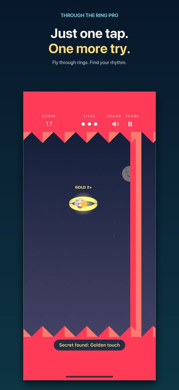
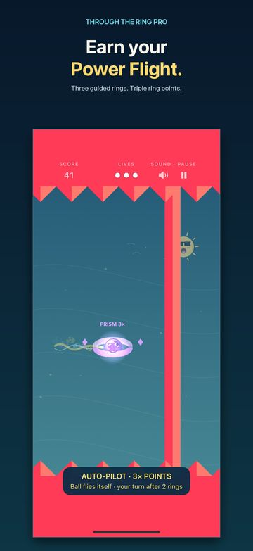
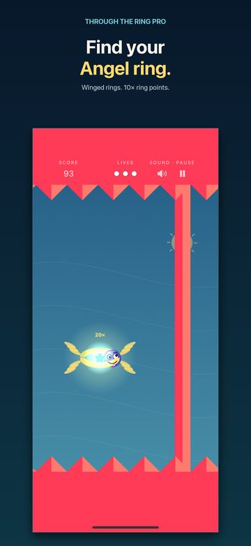

Flappy Tappy: ad-free casual game, Solo and live duels
A casual game for quick breaks: tap to fly through rings on your own, or challenge friends to live duels of up to 30 seconds. No ads and no subscription.
Get Flappy Tappy on the App Store
Where Flappy Tappy fits best
Looking for your next favorite casual game? Flappy Tappy is built for short, one-tap sessions and friendly competition. Endless Solo and duels with friends are free. Play a quick round, send a friend a link and try a rematch.
Solo, friend duels and FaceTime
- Solo: endless offline play with three lives per run.
- Friend duels: live rounds of up to 30 seconds, free for both players.
- FaceTime: choose Duel on FaceTime to play while you talk.
- Other duels: the first 100 are free, then five per day. An optional one-time purchase adds unlimited duels.
Online duels and Game Center features need an internet connection. Offline play applies to Solo.
Inside the game



Screens show Solo gameplay. Available features depend on the installed version.
How to play
Tap to fly up and release to fall. Aim through the rings to open each gate. Center passes earn more points, perfect streaks multiply your score, and a bullseye can activate Power Flight. In duels, the first player to fall loses; if both survive, the higher score wins.
Privacy and purchases
No separate Flappy Tappy account is required. The privacy policy explains version-specific data handling, including optional analytics announced for version 2.5.3 and later. See the policy and current App Store privacy label before installing. Purchase options and local prices appear in the App Store and in the app.